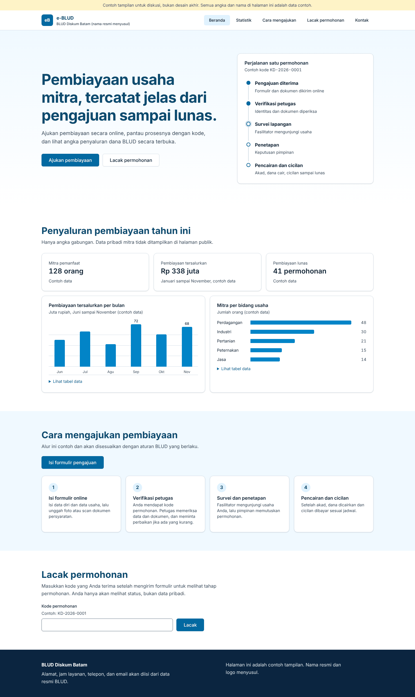
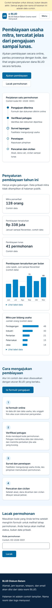
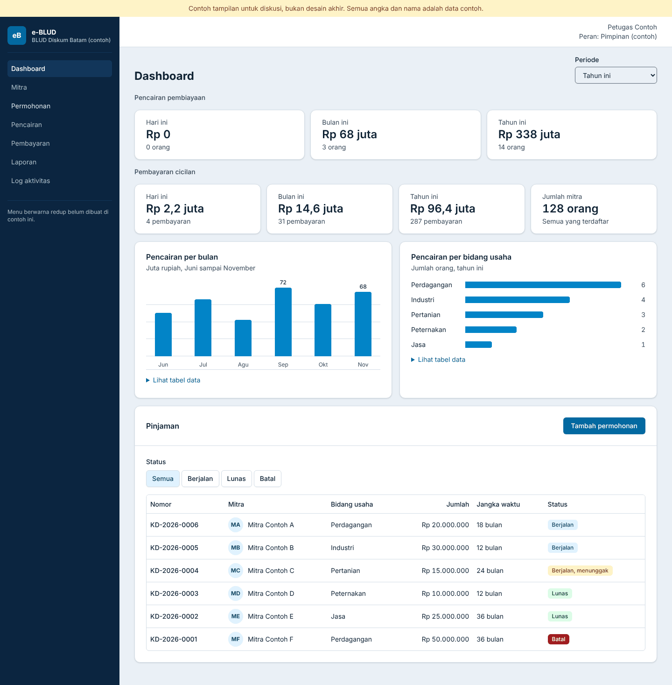
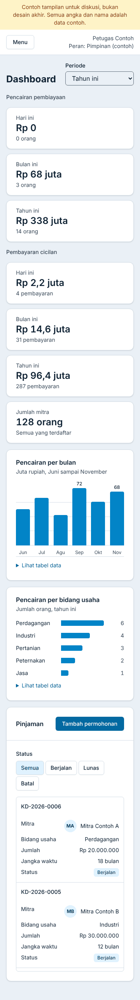
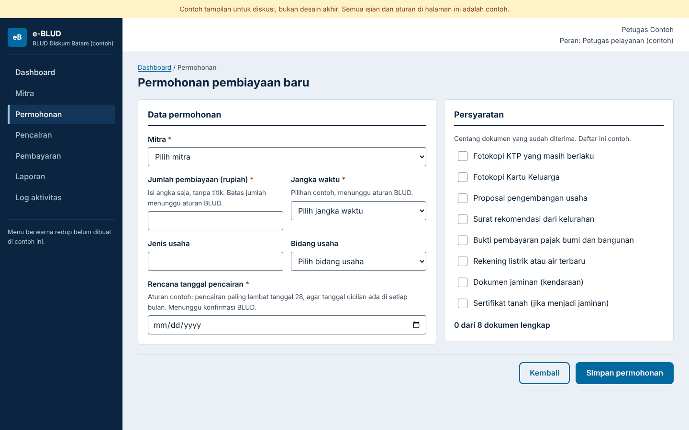
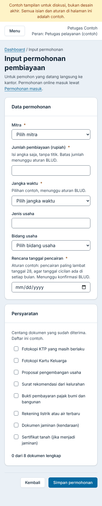

e-BLUD
Sistem digital untuk BLUD Diskum Batam: rancangan kebutuhan dan contoh tampilan
Pratinjau untuk diskusi, draft v0Disiapkan 19 November 2026. Dokumen ini bukan penawaran dan bukan desain akhir. Penawaran harga akan disampaikan secara terpisah.
Tentang dokumen ini
Yang ada di dalamnya
- Tiga contoh tampilan: satu untuk masyarakat dan mitra, dua untuk petugas BLUD.
- Rancangan kebutuhan (PRD draft v0): masalah, pengguna, 14 fitur (F1 sampai F14), batasan, dan pertanyaan terbuka.
Yang perlu diperhatikan
- Alur kerja di sini mengikuti contoh sistem dari Dinas lain. Semuanya masih asumsi dan perlu dikoreksi sesuai cara kerja BLUD Diskum Batam.
- Semua angka, nama, dan tampilan adalah contoh. Nama resmi dan logo BLUD akan menyusul.
- Dua tampilan: situs publik yang modern dan ringan, serta situs petugas yang modern tetapi tetap bergaya aplikasi pemerintahan.
Yang paling ingin kami ketahui dari Bapak dan Ibu
- Bagaimana pembiayaan berjalan sekarang di Excel, dari mitra mengajukan sampai lunas, dan siapa mengerjakan tiap langkah.
- Aturan pembiayaan yang berlaku: batas jumlah, jasa, jangka waktu, agunan, dan denda.
- Peran petugas yang ada, dan laporan yang benar-benar dipakai.
Daftar lengkapnya ada di bagian "Pertanyaan terbuka" pada rancangan kebutuhan.
Contoh tampilan 1: situs publik
Fitur: F13 dan F14
Halaman depan untuk masyarakat dan mitra. Tampilannya modern, berwarna biru muda, dan nyaman dibuka dari ponsel.
- Informasi BLUD dan cara mengajukan pembiayaan (F13).
- Angka gabungan penyaluran pembiayaan, tanpa data pribadi mitra (F13).
- Kolom lacak permohonan dengan kode dari tanda terima berkas (F14, masih asumsi).


Contoh tampilan 2: dashboard petugas
Fitur: F9, dengan data dari F3 sampai F8
Halaman awal petugas setelah login (F1). Tampilannya modern tetapi tetap bergaya aplikasi pemerintahan: menu di samping, kartu angka, dan tabel.
- Angka pencairan dan cicilan hari ini, bulan ini, dan tahun ini (F9).
- Dua grafik, masing-masing dengan tabel data (F9).
- Daftar pinjaman yang dapat disaring menurut status: Berjalan, Lunas, Batal (F7, F8).


Contoh tampilan 3: form permohonan
Fitur: F3, dengan aturan dari F5 dan F6
Petugas mencatat permohonan pembiayaan dan mencentang dokumen persyaratan yang sudah diterima.
- Isian permohonan dan daftar persyaratan dokumen (F3).
- Contoh aturan: tanggal pencairan paling lambat tanggal 28. Jika lebih, muncul pesan kesalahan yang jelas (F5, F6).
- Aturan yang sebenarnya menunggu konfirmasi BLUD.


Rancangan kebutuhan (PRD draft v0)
Tanggal: 19 November 2026 · Status: Draft v0
1. Masalah dan tujuan
Masalah. BLUD Diskum Batam memberikan pembiayaan kepada mitra, tetapi pencatatannya masih manual dengan lembar Excel. Akibatnya data mudah ganda atau berbeda versi, mencari status pencairan dan cicilan memakan waktu, laporan lambat dibuat, dan sulit diketahui siapa mengubah apa.
Tujuan.
- Seluruh proses pembiayaan, dari permohonan sampai lunas, tercatat di satu sistem.
- Data diinput sekali dan langsung terlihat oleh petugas yang berkepentingan.
- Aturan pembiayaan dicek otomatis oleh sistem (aturan Batam: lihat bagian 9).
- Pimpinan melihat angka pencairan dan cicilan di dashboard tanpa menunggu rekap.
- Masyarakat mendapat situs publik yang modern berisi informasi BLUD dan statistik ringkas.
2. Pengguna
| Pengguna | Kebutuhan | Status |
|---|---|---|
| Admin | Mengelola akun, peran dan data master | (Asumsi) |
| Petugas pelayanan | Menginput mitra dan permohonan | (Asumsi) |
| Fasilitator lapangan | Mengisi hasil survei mitra | (Asumsi) |
| Pimpinan (Kasubag atau Kepala) | Menyetujui, mencairkan, memantau dashboard | (Asumsi) |
| Bendahara atau kasir | Mencatat pembayaran cicilan, mencetak kwitansi | (Asumsi) |
| Masyarakat dan mitra | Melihat informasi dan statistik; melacak permohonan dengan kode (Asumsi) | (Asumsi) |
Peran sebenarnya di Diskum Batam belum diketahui.
3. Fitur
Dua tampilan: situs publik (modern) dan situs admin (modern, bergaya pemerintahan). Nomor F1–F14 dipakai di semua dokumen turunan.
| No | Fitur | Situs |
|---|---|---|
| F1 | Login dan peran | Admin |
| F2 | Data mitra | Admin |
| F3 | Permohonan pembiayaan | Admin |
| F4 | Survei dan analisa | Admin |
| F5 | Penetapan dan validasi SOP | Admin |
| F6 | Akad dan pencairan | Admin |
| F7 | Jadwal cicilan dan pembayaran | Admin |
| F8 | Pelunasan dan penyesuaian | Admin |
| F9 | Dashboard | Admin |
| F10 | Laporan inti | Admin |
| F11 | Cetak dokumen | Admin |
| F12 | Log aktivitas | Admin |
| F13 | Situs publik | Publik |
| F14 | Lacak permohonan | Publik |
4. Kebutuhan dan kriteria penerimaan per fitur
Alur di bawah ini adalah asumsi sampai dikonfirmasi klien.
F1 Login dan peran. Pengguna masuk dengan akun yang dibuat admin; hak akses mengikuti peran.
Given pengguna tanpa akun, when membuka halaman admin, then diarahkan ke login. Given peran petugas pelayanan, when membuka menu pencairan, then akses ditolak.
F2 Data mitra. Simpan data identitas mitra (NIK, nama, alamat, kontak, foto, data rekening). Foto dan data pribadi hanya terlihat oleh pengguna yang berhak.
Given NIK sudah terdaftar, when petugas menambah mitra dengan NIK sama, then sistem menolak dan menampilkan data yang ada.
F3 Permohonan pembiayaan. Petugas mencatat permohonan: mitra, jumlah, jangka waktu, jenis dan bidang usaha, daftar persyaratan dokumen. Permohonan dapat dibatalkan dengan alasan wajib.
Given persyaratan wajib belum lengkap, when permohonan diajukan ke survei, then sistem menampilkan dokumen yang kurang.
F4 Survei dan analisa. Fasilitator mengisi hasil survei (modal, target penjualan, keuntungan, rincian penggunaan dana) pada permohonan yang sama.
Given permohonan belum disurvei, when pimpinan membuka penetapan, then sistem meminta survei diselesaikan dahulu.
F5 Penetapan dan validasi SOP. Pimpinan menetapkan atau menolak. Sistem menolak nilai yang melanggar aturan (batas pembiayaan, nilai agunan).
Given jumlah melebihi batas yang berlaku, when disimpan, then muncul pesan kesalahan yang menyebut aturan yang dilanggar. (Nilai aturan: bagian 9.)
F6 Akad dan pencairan. Catat nomor akad, tanggal realisasi dan jatuh tempo, lalu cairkan. Aturan tanggal pencairan maksimal tanggal 28 (Asumsi).
Given tanggal realisasi lebih dari batas, when disimpan, then ditolak dengan alasan.
F7 Jadwal cicilan dan pembayaran. Sistem membuat jadwal cicilan otomatis; bendahara mencatat pembayaran pokok, jasa dan denda. Denda dihitung otomatis dengan kalender hari kerja (Asumsi).
Given cicilan lewat jatuh tempo, when dibuka, then denda tampil sesuai aturan dan hari kerja.
F8 Pelunasan dan penyesuaian. Pelunasan dipercepat dengan penyesuaian sisa jasa; status berubah menjadi Lunas.
Given semua cicilan terbayar, when pembayaran terakhir disimpan, then status pinjaman otomatis Lunas.
F9 Dashboard. Kartu angka (hari ini, bulan ini, tahun ini) untuk pencairan dan cicilan, jumlah mitra, serta dua grafik, dengan filter tanggal.
Given data pencairan baru disimpan, when dashboard dibuka, then angka sudah ikut berubah tanpa input ulang.
F10 Laporan inti. Laporan pencairan, cicilan, tunggakan, kolektibilitas dan pembiayaan lunas per periode, dapat dicetak PDF dan Excel. Daftar laporan final ditentukan klien.
Given periode dipilih, when laporan dibuat, then totalnya sama dengan dashboard.
F11 Cetak dokumen. Formulir permohonan, tanda terima berkas, rincian biaya dan kwitansi pembayaran dengan kode QR, ukuran A4.
Given pembayaran tersimpan, when kwitansi dicetak, then nomor, jumlah dan terbilang sesuai data.
F12 Log aktivitas. Setiap perubahan data tercatat: siapa, kapan, apa. Log tidak dapat diubah dari aplikasi.
Given data pinjaman diubah, when admin membuka log, then tampil pengguna, waktu dan nilai sebelum dan sesudah.
F13 Situs publik. Beranda, profil, layanan, berita, galeri, kontak, dan statistik agregat. Tidak menampilkan data pribadi mitra.
Given pengunjung membuka situs publik, when melihat statistik, then hanya angka total dan grafik yang tampil, tanpa nama, NIK atau foto.
F14 Lacak permohonan (Asumsi). Pemohon memasukkan kode dan melihat status permohonan saja.
Given kode salah, when dikirim, then tampil "Kode tidak ditemukan" tanpa petunjuk lain.
5. Di luar cakupan
- Harga dan penawaran (dibuat terpisah).
- Pemindahan data Excel lama (Asumsi, dikonfirmasi di bagian 9).
- Pembayaran online oleh mitra; pembayaran dicatat oleh petugas.
- Aplikasi mobile.
- Peta lokasi mitra (GIS), kecuali klien memintanya.
- Pengiriman notifikasi WhatsApp atau SMS.
6. Ukuran keberhasilan (usulan, belum disepakati)
- Rekap pencairan dan cicilan dapat dibuat dalam hitungan menit, bukan hari.
- Tidak ada data yang diketik dua kali antarpetugas.
- Setiap perubahan data dapat ditelusuri ke satu pengguna.
- Halaman publik dan admin memenuhi WCAG 2.2 AA dan Core Web Vitals "baik" (LCP ≤ 2,5 dtk, INP ≤ 200 ms, CLS ≤ 0,1).
7. Batasan
- Biaya: gratis lebih dulu (Firebase Spark, Google Apps Script, Google Drive). Layanan berbayar hanya dengan alasan tertulis dan persetujuan klien.
- Waktu: belum ditentukan.
- Perangkat: peramban modern di komputer dan ponsel.
- Data pribadi dan keuangan: NIK, foto, alamat, serta data pinjaman dan pembayaran diperlakukan sebagai data sensitif; setiap tahap yang menyentuhnya perlu persetujuan sebelum dibangun.
- Keamanan: daftar periksa OWASP Top 10 dan tinjauan keamanan pada setiap perubahan.
8. Tampilan
Situs publik: modern, biru muda, ramah ponsel. Situs admin: modern tetapi bergaya pemerintahan, dengan menu samping dan tabel. Contoh tampilan terlampir terpisah dan hanya berupa contoh, bukan komitmen desain akhir.
9. Pertanyaan terbuka
| No | Pertanyaan | Dijawab oleh |
|---|---|---|
| 1 | Bagaimana alur pembiayaan sebenarnya, dan siapa mengerjakan tiap langkah? | Klien (Kepala BLUD) |
| 2 | Peran apa saja yang ada di Diskum Batam? | Klien |
| 3 | Aturan pembiayaan: batas per jenis, jasa, jangka waktu, agunan, denda, batas tanggal pencairan | Klien |
| 4 | Apakah mitra boleh mengajukan atau melacak permohonan secara online? | Klien |
| 5 | Apakah peta lokasi mitra diperlukan? | Klien |
| 6 | Dasar hukum Batam (Perwako dan tarif) yang berlaku | Klien |
| 7 | Nama resmi, logo dan penulisan BLUD | Klien |
| 8 | Apakah data Excel lama harus dimasukkan? | Klien |
| 9 | Laporan apa saja yang benar-benar dipakai? | Klien |
| 10 | Perkiraan jumlah pengguna dan mitra | Klien |
10. Persetujuan
| Nama klien | Jabatan | Tanggal | Tanda tangan |
|---|---|---|---|